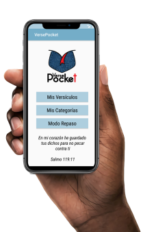

<section class="section-descripcion">
    <div class="contenedor_descripcion container-fluid">
        <div class="row justify-content-center">
            <div class="col-sm col-md col-5 col_descripcion">
                <div class="texto_descripcion">
                    <h2>¿Qué es VersePocket?</h2>
                    <h4>Tu archivador personal de versículos</h4>
                    <p>Una herramienta para que guardes, clasifiques y repases tus versículos de la Biblia
                        favoritos.
                    </p>
                </div>
            </div>
            <div class="col-sm col-md col-7 col_img_descripcion">
                
            </div>
        </div>
        <!--
        <div class="separador_descripcion">
            
        </div>-->
    </div>


</section>